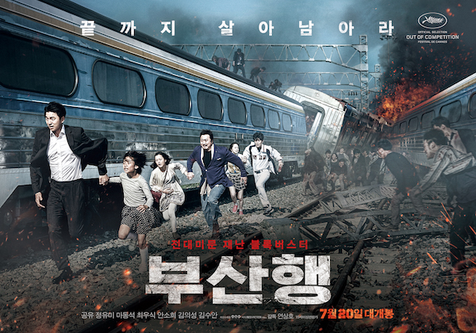
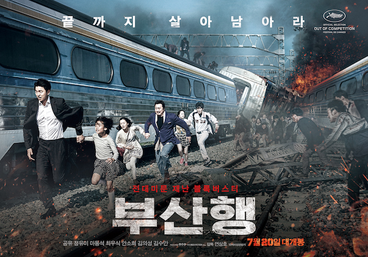

My Favorite Movie #1
October 25, 2021
Syeda Samantha
This first movie of mine is "Train to Busan", directed by Yeon Sang-ho. This movie is about a father and daughter trying to reach their destination of the city Busan, when suddenly there is an infection going around their city, eventually reaching up to the train they were in. They try and survive along with the other passengers in the train to reach the destined safe zone throughout the whole movie.
 
